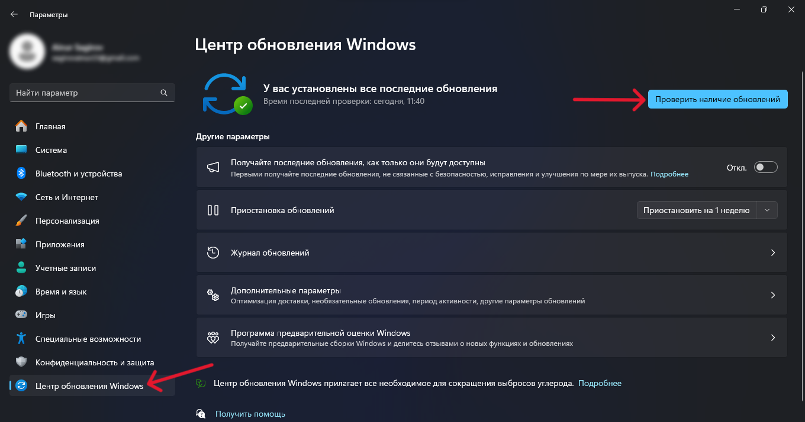
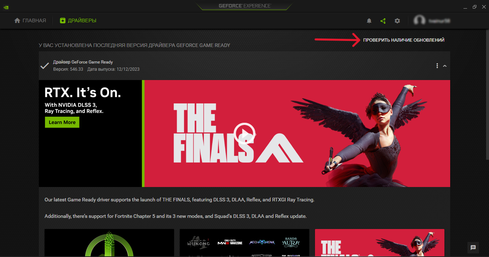
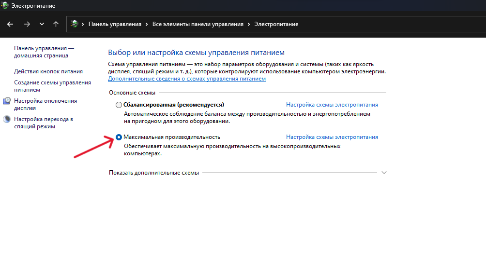
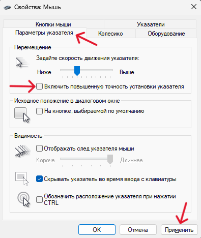
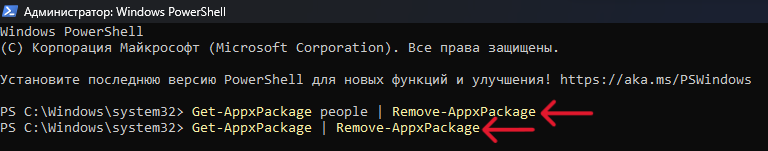
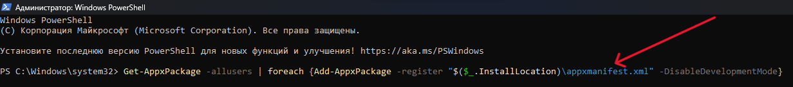

Драйвера Windows:
Настройки(Win+i) → Центр обновления Windows → Проверить наличие обновлений

Драйвера Видеокарты:
GeForce Experience → Войти в Аккаунт → Проверить наличие обновлений

Максимальная Производительность:
Пуск → Командная строка(Админ) → powercfg -duplicatescheme e9a42b02-d5df-448d-aa00-03f14749eb61
Пуск → "Панель управления" → Электропитание → Максимальная Производительность

Ускорение мыши:
Пуск → Панель управления → Мышь → Параметры указателя →
→Отключить повышенную точность установки указателя

Встроенные приложения:
Удаление: Пуск → PowerShell(Админ) →

Восстановление: Пуск → PowerShell(Админ) →
